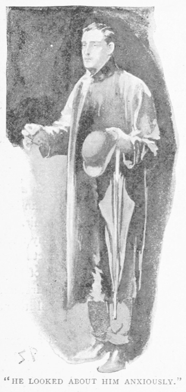
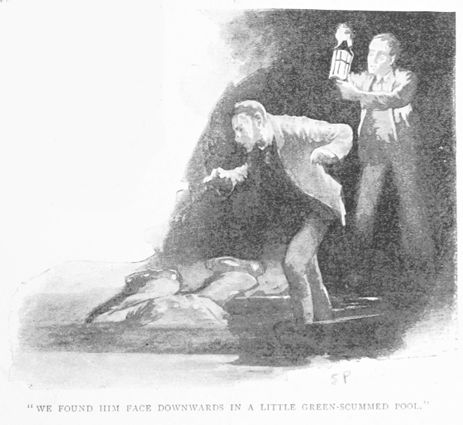
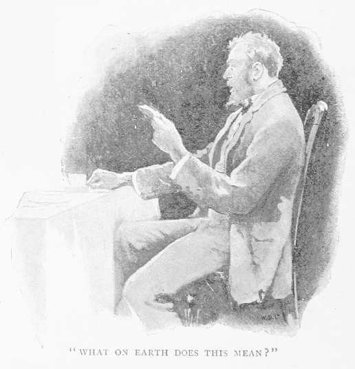
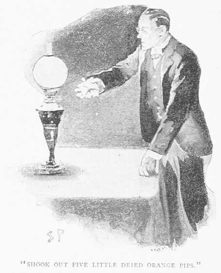
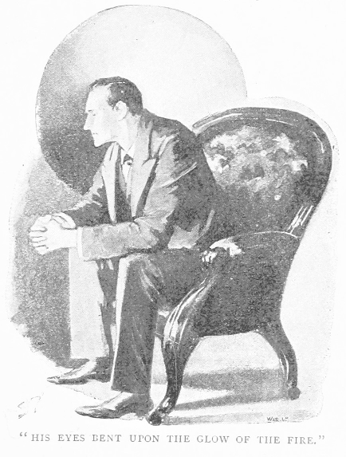
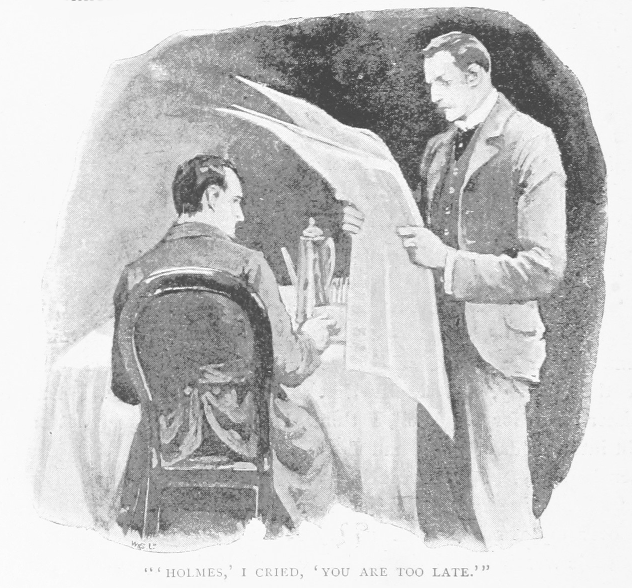

さて、八二年から九〇年にわたるシャーロック・ホームズの事件記録を瞥見してみると、面妖で面白いものが続々と現れるため、どれを取捨したものか難儀なものである。とはいえ、なかには既に新聞を通じ世に知られたものもあれば、我が友の有する高度な特技の出る幕なく本連載でわざわざ語るまでもないものもある。またその分析力が挫かれ物語としても尻切れになりかねないものや、一方で全容が明らかならずその説明も友人の好む曇りない論理の決め手というより揣摩憶測にしか基づかないものもある。とはいえ今挙げた最後のものには、その次第が目を惹き結末もぞくりとするのが一件あるので、実際これまでそしておそらくこれからも全容明らかならざる点がこの件にあるにしても、その一部始終を語りたく思うのだ。
八七年は私にとって多かれ少なかれ惹かれる事件の連続で、そのことが記録に残されてある。この十二ヶ月分もの見出しのうちに色々の冒険談が見つかる。パラドールの
九月の
「はて。」と私は我が同居人の方へついと目を上げ、「今のは確か呼鈴。こんな夜に誰だろう。君の友人かね。」
「君以外にいるものか。」との返事。「呼んだ客とてない。」
「なら依頼人か。」
「だとすれば大事件、こんな日こんな時間に来るとは余程のこと。むしろあの家主の古なじみが来た、といったところか。」
ところがシャーロック・ホームズの読みは外れた。なんと廊下を歩く足音に続いて、扉をたたく音。そこで友人は長い腕を伸ばして灯りを自分のわきから離し、来客の座るべき空席近くに置いた。「どうぞ！」
入ってきたのは一見二二ほどの若い男、身綺麗であがった風采、何となく身のこなしも上品で細やか。手に持った雫垂れる傘と闇にきらめく雨外套は、今抜けてきた外の激しさを物語っている。灯りに照らされ青年はおずおずと辺りを見回す。見れば青ざめた顔に、愁いに沈む瞳、彼もまた何か大きな心配事を抱えているらしい。

「お詫び申し上げます。」と青年は金の鼻眼鏡を目元に上げ直し、「お邪魔でなければいいのですが。このように嵐の雫や泥を、お心持ちのいいお部屋に持ち込みましたのは誠に……」
「その外套と傘をこちらへ。」とホームズ。「ここへ掛けておけばすぐに乾きます。西南の方角からおいでのご様子。」
「そうです、ホーシャムから。」
「その泥と石灰が靴の飾革に見えれば、明々白々。」
「このたびはご助言と……」
「それならたやすい。」
「お力添えをと。」
「となると難儀なこともある。」
「お噂はかねがね、ホームズ先生。お話をプレンダギャスト少佐から。先生はあの方をタンカヴィル倶楽部の醜聞からお救いになったとか。」
「その通り、少佐はトランプでいかさまの濡れ衣を着せられた。」
「先生はどんなことでも解決おできだとか。」
「言い過ぎだ。」
「先生にはご失敗がないとも。」
「四度ある――三度は男に、一度は女に。」
「ですが先生の成功の数に比較したら物の数でも！」
「なるほど、これまで大抵うまくいった。」
「なにとぞ今回も。」
「まあ、その椅子を火に寄せて、どうか仔細を。あなたの事件とは。」
「それが尋常一様ではなく。」
「僕へ持ち込まれるものはみなそうだ。差し詰め最終審か。」
「ですが先生、ぼくの一家に落ち掛かった一件くらい摩訶不思議の連続は、数あるご経験のなかでもお聴きになったことがあるかどうか。」
「そそられることをおっしゃる。」とホームズ。「事の起こりから要点だけお願いします。あとから眼目と思しきところを細々尋ねますので。」
青年は椅子を引き寄せ、濡れた両足を火の方に突き出した。
「ぼくの名前はジョン・オープンショウと申します。とはいえぼく自身は、察する限りこの恐ろしい一件にさほど関わりありません。親族の話でありまして、全体像を掴んで頂くためには、過去に話を遡らせねばなりません。
そもそもぼくの祖父には子がふたりありました。伯父のイライアスとぼくの父のジョゼフです。父はコベントリで小さな
伯父のイライアスは若い時分にアメリカへ移住しまして、フロリダに農園を始め、相当な仕事をしたそうです。内戦の折は、最初ジャクスン将軍の部下、のちにフッド将軍に従い大佐まで昇進しましたが、リー軍の降伏とともに農園に戻り、三・四年は続けました。が一八六九年か七〇年に欧州へ帰って参りまして、サセックスのホーシャム近くに小さな館を構えました。よほど
ただぼくだけは大丈夫どころか、まだ十二歳かそこらの青い頃、初対面で伯父に気に入られたみたいで。確か一八七八年、伯父が帰英して八・九年目というところですが、父に話してぼくを伯父の館に養い込みまして、彼なりにかわいがってくれました。素面の時には決まってぼくを
ある日――一八八三年三月でした――外国切手のある封書が大佐の皿の前に置かれたのです。普段伯父には手紙も来ません。支払いはいつも現金でしたし、友だちひとりあるはずないのですから。伯父は『印度からか。』と言って手紙を取り上げながら『消印はポンディシェリ、こりゃ何でい。』と急いで封を開くと、干からびた橙の種が五粒、皿の上にぱらぱらと。ぼくは吹き出しそうになりましたが、伯父の顔を見ると唇がふさがって。伯父は下唇を曲げ、目玉をひん剥いて、頬も土気色、目の先にはわなわなする手にまだ掴んでいる封筒、「ＫＫＫ！」と伯父は叫んだのです、そして『主よ主よ、罪の報いだ！』と。
『何です、伯父さん。』とぼくも大声を。
『死神！』と言ったきり伯父は席を立って部屋に入ってしまい、残されたぼくは恐ろしさに胸の鼓動が止まらず。封筒を拾い上げてみますと、折り返しの裏糊のすぐ上に赤い墨の走り書きが。Ｋの字が三回繰り返し。他に五粒乾いた橙の種以外何もなくて。いったいどういうわけで伯父は恐れ震え上がっているのか。ぼくは朝の食卓をそのままに、階段を上り出すと、伯父が古錆びた鍵を持って降りるのに出くわして、これはきっと例の屋根裏のもので、もう片方の手には銭函のような小さい真鍮製の箱を持っています。
『あいつらが何をしようたって、まだこちらには奥の手があらあ。』と伯父は力み返って、『メアリに言いつけろい。今日は俺ん部屋に火が要るって。これからホーシャムの弁護士のフォーダムを呼びにやんな。』
でぼくはその言いつけ通りに。弁護士が来ますと、ぼくは部屋に呼び込まれました。見ると、火が輝やかに燃え上がっていて金網のなかには、何か紙の焼けたらしい黒い綿毛のような灰が残り、そのそばに例の真鍮製の箱が開かれており、中は空でした。箱をひと目見るとその蓋には、今朝封筒にあった通りＫみっつ記されてあってぼくは愕然としました。
伯父が言いますには、『ジョン。お前、俺の遺言の立会人になれ。この財産とついてくる利益損失みんな俺の弟、つまりお前の父さんに譲るが、やがてお前のもんになるだろう。無事お前の得になるなら越したこたあない！ だがやばいとわかった場合には、俺の言うこたあ聞いて、手前の一番憎い
言われるがまま署名し、弁護士はそれを持っていきました。この妙な一件が、おわかりでしょうが、僕の心に強く残って。繰り返し胸のうちで考えてみましたが、どういうことか少しも分かりません。ですがぼんやりとその裏に感じる不安をどうしても払えません。日が経つにつれ、治まってはいきますし、別にこれということも日々の生活に起こらないのですが、しかし伯父の身にはどうやら只事でなさそうです。酒の量も増え、いよいよ人付き合いを避けます。大抵部屋に閉じこもり、内から鍵を掛けていますが、時たま酔っ払った勢いか、出てきて館から飛び出し、拳銃を手に、庭のあたりで暴れ、誰も怖くない、人か悪魔かとにかく羊のように檻に入れられてたまるか、と怒鳴り回るのです。ところがやがてこんな激しい発作が終わると、うろたえて駆け足で部屋に帰り、鍵を掛け、閂まで差すのです。その魂の根元に無視できない恐怖が
で、話が長くなりまして相済みませんが、ホームズ先生、いよいよ最後、つまりある夜、酔った伯父が家出をしたまま帰ってこないのです。探しに出てみますと、庭の外れにある青味泥の浮く小池にうつぶせで見つかって。争った形跡はなく、池の水もわずか六〇センチの深さなのですから、平時の錯乱を鑑みて陪審は自殺という評決をしました。どうもぼくには、むしろ伯父が死を頭から振り払おうとしているように見えていたので、わざわざ自分からやっただなんて、おいそれとは納得できかねます。ともかく事が過ぎ、ぼくの父があとの屋敷と銀行口座の一万四〇〇〇ポンドほどを受け継ぎました。」

「ここでひとつ。」とホームズは言葉を差し挟む。「君の話は、耳にしたなかでは極めて稀な部類に入るものと見えます。確認ですが、君の伯父上が手紙を受け取った日と、その自殺と思われる日は？」
「手紙の着いたのが一八八三年三月一〇日。死んだのがそれから七週後の五月二日の夜でした。」
「どうも。先をどうぞ。」
「で、父がホーシャムの地所を相続したとき、ぼくが頼んで例の開かずの屋根裏を詳しく調べてもらいました。そこに見つかったのは真鍮箱がひとつ、でも中は処分されてまして。その蓋の内側に張り紙があって、またもや大文字でＫＫＫ、その下に『手紙・控え・受取・一覧』とあります。つまりオープンショウ大佐に処分された書類とはそういう類のものだったのだとぼくたちは考えました。あとは屋根裏に別段これといったものはなく、ただアメリカ生活中の書類とか日記とかが雑多にあるだけ。なかには戦争当時のものもあって、伯父が軍務を果たし、勇敢な兵との評判だったことが伺えました。他にも南部諸州再建時代のものもあり、大半が政治がらみのもので、その節、伯父は北部諸州から来たいわゆるお渡りの政治家に真っ向表に立って反対したそうです。
で父がホーシャムの館に住みだしたのは、八四年の初めからですが、翌八五年の一月まで何事もなく幸せでした。新年の四日目です、一緒に朝の食卓に着くと父がわっと驚きの声を発しました。見ると父は片方の手に、開けたばかりの封筒を持ち、もう片方の突き出した手のひらの上に、干からびた種が五粒。父はいつも大佐のことをぼくの作り話と茶化していたのですが、今度同じ事が自分の身の上に落ちたので、度肝を抜かれ途方に暮れた様子で。

『いったいこれはどうしたことだ、ジョン。』と父は口ごもりました。
僕の心も重くなってしまい、ただ『ＫＫＫです。』と。
父は封筒の内側を見て、『なるほど』と声を張り、『ここにその文字があるが、その上にも何か書いてあるな。』
『書類を日時計に置け。』とぼくは父の肩越しに読みました。
『書類とは何だ。日時計？』と父も訝ります。
『庭の日時計です。他にありません。書類はきっと、あの処分されたやつですよ。』とぼくは答えました。
『馬鹿な。』と父は心を猛らせ、『ここは文明国じゃないか。こんなくだらない冗談があるか。どこからこんなものを寄越した？』
『ダンディからです。』とぼくは消印に目を向けて答えます。
『たちの悪い非常識な悪戯だ。日時計に、書類、知ったことか。そんな馬鹿馬鹿しいものに取り合ってられん。』
『こうなったらぼくが警察に。』
『挙げ句笑われるが落ちだ。とんでもない。』
『行くのはぼくです。』
『いいや、ならん。こんな馬鹿げたことで騒ぐなど。』
父はなかなか頑固者ですから、どう言っても無駄で。が、どうもぼくには胸が騒ぐのです。
この手紙が来て三日目に父は旧友を訪問するといって出かけました。今ポーツダウン
こういう剣呑な調子で財産はぼくの手に。なにゆえそれを売却しないかって先生はおっしゃるかもしれません。それの答えとしては、ぼくは今回の禍根はどこか伯父の身の上にあって、所詮家を換えても危険は迫ってくるものと強く思うからなのです。
父が非業の死を遂げたのが八五年の一月ですが、それから二年八ヶ月経ちました。このあいだぼくはホーシャムの館で平穏に過ごしましたから、災いは一族から去ったものと、先代きりになったと思えて参りました。ところが安心するのはまだ早かったのです。昨日、父とまったく同じ形で襲ってきました。」
青年は胴衣から皺だらけの封筒を取り出し、卓へ向いて五粒の干からびた橙の種をふるい落とした。

「これがその封筒です。」と言葉を継ぐ。「消印はロンドン――東地区。なかには前に父へ寄越したのと同じくＫＫＫの文字、それに『書類を日時計に置け』。」
「あなたのご対応は？」とホームズが訊いた。
「何も。」
「何も？」
「実を申しますと、」――と青年は顔をしなやかな白い手に
「ちっちっ。」とシャーロック・ホームズは舌を鳴らす。「とにかく動くことだ、やられてしまう。行動力だけが身を救う。諦めてる暇はない。」
「警察には行きました。」
「うむ！」
「ですがにやにやしながら話を聞くだけで。どうも警察はこう受け取ったみたいです。手紙はたちの悪い悪戯、親類の死は陪審の通りまったくの偶然、手紙と何らの関係もないはずだ、と。」
ホームズは両の握り拳で空を引っ掻く。「信じがたいほどに無能！」
「しかしひとりの警官をつけて館に常駐してくれてます。」
「今夜はその者と一緒に？」
「いいえ、あくまで館の張り込みですから。」
再びホームズは空を切る。
「どうして僕のところに来た。」と大声。「いや何より、なぜすぐ僕のところへ来なかった。」
「存じ上げず。ようやく今日になってプレンダギャスト少佐に悩みを打ち明けると、先生の元にと勧められて。」
「君がその手紙を手にしてちょうど二日。もっと以前に動くべきだった。話はこれで全部か。今僕らに話した分で――助けになりそうなことはもう？」
「あとひとつだけ。」とジョン・オープンショウは上着の懐を掻き探り、褪せて青みがかった紙を一枚出して卓上に置いた。「思い出したのですが、前に伯父が書類を燃やしたとき、灰のなかの焼け残しの切れ端が、この紙とまったく同じ色で。この一枚は伯父の部屋の床にあったのを見つけたのですが、これは他の書類からひらり抜け落ちて、そのまま処分を免れたものかなと思えてきまして。でもまあ種が出てくる以外役立つとも思えません。個人的には手記の一部かと。筆跡は間違いなく伯父のです。」
ホームズは灯りを動かし、ふたりでその紙へかがみ込むと、どうやら一冊から裂いたらしく、端がぎざぎざになっていた。頭の日付は「一八六九年三月」、その下に次の謎めいた覚書があった。
四日 ハドスン来る 主義変わらず
七日 マコーリー、パラモア、セントーガスティン在のジョン・スウェインに種を宛てる
九日 マコーリー片付く
一〇日 ジョン・スウェイン片付く
一二日 パラモアを訪ねる 上々
七日 マコーリー、パラモア、セントーガスティン在のジョン・スウェインに種を宛てる
九日 マコーリー片付く
一〇日 ジョン・スウェイン片付く
一二日 パラモアを訪ねる 上々
「かたじけない。」とホームズはその紙をたたみ、依頼人に返してやり、「さてこうなっては、事は一刻を争う。話してくれたことを論じている暇もない。ただちに帰って動くことだ。」
「いったいどう？」
「なすべきはただひとつ。それも即刻。今見せたその紙をくだんの真鍮箱のなかに入れることだ。ほかの書類はみな伯父が焼き、残っているのはこれ一枚きりだという言伝も箱に入れておくこと。文章に信憑性をしっかり持たせるんだ。済んだらその箱を指定通りの日時計に出しておくこと。いいですか。」
「了解です。」
「今は復讐、それに類する考えは抱かぬよう。いずれ法によって為し得よう。とにかくこちらも策を講じるのだ。向こうはすでに講じているのだから。第一に考えるのは君を脅かす目前の危険を取り除くこと。謎を明らかにして悪の一味を罰するのは二の次だ。」
「感謝します。」と青年は立ち上がって、外套を着ながら、「先生のおかげで新しい希望と生命とが漲って参りました。ご指示の通りに致します。」
「一刻も猶予せぬよう。まずそれまでは自分の身を用心したまえ。思うに、本物の恐ろしい危険が君に差し迫っていることは間違いない。帰りは何で？」
「ウォータルーから汽車で。」
「九時まで時間がある。表に人通りはあるから、安全だろうとは思う。だが用心に越したことはない。」
「ここに護身用が。」
「結構。こちらも君の件に取りかかるつもりだ。」
「ではホーシャムの館にお出で下さると？」
「いや、真相はロンドンにある。探るべくはそこだ。」
「ではぼくは一両日中にその真鍮箱と紙との成り行きをご報告に参ります。みなご指示通りに致しますので。」と青年は我らと握手を交わして去った。外には風がなお吹きすさび、窓を叩く雨が繁る。この摩訶不思議な物語が荒れる天候から現れ出たかのよう――大時化の際の藻草が一面に押し寄せるがごとくで――そして今再び同じく退いていったかのよう。

シャーロック・ホームズは静かに椅子で前へうなだれ、炎の赤い光に目を向けていた。やがてパイプに火を点じ、後ろに寄りかかって紫煙の輪を眺めていると、互いに追いつ追われつ天井裏に這い上ってゆく。
「思うにワトソン。」ととうとう口を切った。「これまでの事件のうちこれほど奇抜なのはまずない。」
「まあ四人の誓いを措いては。」
「そうだな。まあそれを措いては。ところが僕からすればこのジョン・オープンショウの方があのショールトオ兄弟以上にはるか危険の道を辿りつつある。」
「だが君はもう、」と私。「その危険が何なのか、頭ではしっかり掴んでるんだろう？」
「核の部分に疑問はありえぬよ。」と友人は事も無げだ。
「なら何かね。このＫＫＫとは何者で、あの不幸な一家を狙うのは何のためだ？」
シャーロック・ホームズは目を閉じ、肘を椅子に掛け、指先を合わせ、「つまり理想的な推理では、」と説明を始める。「ひとたび全容の一端を見せられると、それから演繹してそこへ至る一連の出来事ばかりか、あとに続く結果みなまでわかるものだ。ちょうどキュヴィエが骨一本の検討から動物の全身像を正しく描けるのと同様、観察する者は、ひとつながりの出来事の一環さえ完全にわかれば、前後含めたすべての輪を狂いなく言い当てることができよう。我々はまだ結論を掴んでいないが、それは推理のみが到達できるもの。問題は書斎でも解決できうるのだ、それが感覚の力に任せて解答を求める人々を挫かせているものでもあってもね。ところがこの技を極限まで発揮しようとするには、知り得る限りのあらゆる事実を推理の際に利用できねばならない。つまりこれは、たやすく分かると思うが、ありとある知識の所有を意味する。このことは、現代の無償教育・百科事典においてさえ、いくぶん稀にしか為しえない。とはいえ人がその仕事に役立ちそうな知識だけを一通り有しておくのは、さほど無理なことでもない。僕にしたところでそちらを心がけている。僕の記憶が確かなら、仲良くなり始めの頃、僕の能力値をはっきり定めて書き立てたことがあったね。」
「ああ。」と私は笑いながら答えた。「おかしな書き物だったな。哲学・天文・政治揃って零点、とね。植物は物により、地学は街から八〇キロメートル以内のあらゆる地域の泥汚れに限って該博。化学は偏重、解剖は体系的でなく、怪奇事件と犯罪記録は及ぶものなし。ヴァイオリン弾き、拳闘家、フェンシングの手練れ、法律通、コカインと煙草の中毒者。以上が我が分析の要点だったかな。」
ホームズは最後の項目に苦笑したが、「まあ、」と言って、「あのときと同じように言わせてもらうと、人間が頭脳という屋根裏の小部屋にいつも置いておかねばならぬのは、よく使う道具だけ、それ以外は書斎という物置に片づけておいて、入り用の際にそこへ取りに行けばいい。さて、今夜僕らへ持ち出された事件のような場合は、まさしくあらゆる情報源をかき集めねば。全米百科全書のＫの巻を渡してくれたまえ。君のわきの本棚に入っている。ありがとう。さて事態を考え、何が演繹で出てくるか見てみよう。出発点はまず間違いないことから。つまりオープンショウ大佐がアメリカを捨てたには余程の大きな理由がある。あの年輩の男は普通慣れたことを変えないから、楽しげなフロリダの風土からイングランドの田舎町の侘びしい生活に喜々として転じはしない。イングランドへの隠居を切望するその心は、何かもしくは誰かを恐れている。ならば作業仮説として、その何か・誰かへの恐れが彼をアメリカから出させたと考えてもよい。恐れるものが何なのか、それを演繹できる手だては、大佐および相続人らの受け取った不気味な紙の検討を措いて他にない。あの封書の消印を挙げていくと？」
「第一がポンディシェリ、第二がダンディ、第三がロンドン。」
「東ロンドンだ。そこから何を演繹する？」
「どれも港だな。すると差出人は船に乗っていた。」
「素晴らしい。これで糸口が掴めた。こうなれば、船に乗っていたことはおそらく――いやまず間違いないだろう。さて次の点を検討しよう。ポンディシェリの場合には、脅してから殺すまでが七週、ダンディの場合がわずか三・四日、この示すところは何か？」
「移動距離の差か。」
「しかし手紙にも同じく移動距離がある。」
「やあ、その点はうっかりした。」
「少なくとも単独複数いずれにせよ乗る船は帆前船という推測が立つ。やつらは務めに取りかかる際、前もって例の奇怪な通知なり合図なりを常に送っているかに見える。ほら、ダンディからの場合は知らせと実行との間が短い。やつらポンディシェリから汽船で来たなら、到着は手紙とほぼ同時のはず。ところが実際は七週の差ができた。思うにこの七週こそ、手紙を運んできた郵便船と、差出人を乗せて来た帆前船との差なのだ。」
「もっともらしいな。」
「それどころか、ほぼ確かだ。さてこうなると今回出てきた件がひどく緊急とわかるね。オープンショウ青年に用心を説いた理由も。災いは毎回差出人の移動距離に応じた時間の経過後に降り懸かる。ところが今回はロンドン、しからば遅れを見積もることはできない。」
「なんと！」と私は叫ぶ。「なんだってこんなむごい仕打ちを！」
「つまりはオープンショウの持ってきた書類が帆前船のやつなり連中なりにとって生死に関わるほど大事なのだ。僕は確信するが単独犯でない。ひとりでは到底、検死陪審を欺くほどの死を二度も演出できるものか。五・六名は確かにいる上、知恵と思い切りのある連中だ。例の書類だが、持ち主が誰であろうと執拗に得ようとする。このことからほら、自然ＫＫＫは個人の頭文字でなくなり、結社の印となる。」
「しかし何の結社だ。」
「聞いたこと――」とシャーロック・ホームズは前かがみに声を潜めて、「聞いたことはないか、クー・クラックス・クランのことを。」
「初耳だ。」
ホームズは書物を膝に載せて紙を繰り、「ここだ。」と程なく告げる。
クー・クラックス・クラン 名は小銃の掛金をかける響きに似通わせて作れる言葉に由来する。南北戦争後、南部諸州の元南軍兵士により結盟されたる恐怖の秘密結社にして、その支部すみやかに各地に広がり、テネシー、ルイジアナ、南北カロライナ、ジョージアおよびフロリダにわたる。活動目的は政治にあり、殊に黒人有権者の脅迫、その主義に反対する者の殺害ないし国外追放にある。その凶行に先だって通例、標的の人物へ奇抜な通知を送ることでよく知られる――樫葉の小枝、または甘瓜の種ないし橙の種など。ひとたびこれを受けたる者は従前の意志を表立って捨てるか、その地を逃亡するかの二者択一なり。刃向かう場合は死に見舞われるのが常で、その方法は奇怪かつ予期不可能なるが通例。この結社の組織ははなはだ完全にして手口ははなはだ徹底なるゆえ、立ち向かい無事なりし者も凶行から下手人に辿れたることもほとんど記録されず。アメリカ合衆国政府・南部社会上流階級の努力に関わらず、数年間盛んなりしも、一八六九年この結社は突如瓦解に至る。ただしその以後も時として同種の組織起こることあり。
「お分かりかな。」とホームズは大冊を伏せ、「結社の突然の解体とオープンショウが書類を持ってアメリカから消えた年とが一致する。もっともな因果だ。オープンショウ一家が今も執念深い輩に追われているのも無理はない。これでわかったろう、この一覧と日記は南部の顔役の幾人かを結びつけるもので、これが見つかるまで夜もおちおち眠れない連中が大勢いるのだ。」
「すると我々の見たあの切れ端は――」
「想像通りのものだ。記憶が確かなら本文は『Ａ、ＢおよびＣに種を送る』――つまり結社からの通告だ。それから続く記述、ＡとＢとが片づいたというのは国外へ出たということ、最後のＣを訪ねるとは、おそらくＣの不幸な結果のこと。そう、思うに
朝には空が晴れ、輝く日の光がこの大都会の上を薄く覆う靄をやわらかに照らしている。シャーロック・ホームズは私が降りてきたときには朝の食卓にもう着いていた。
「君を待たずに失敬している。」と友人。「これから僕はオープンショウ青年の事件調査にせわしない一日となりそうだからね。」
「どんな作戦で行く？」と訊ねる私。
「そればかりは
「そこが先ではないのか。」
「いや手始めは
待つあいだと私は卓上から閉じたままの新聞を取り上げて目を通した。向けた先の見出しに思わずぞっとする。
「ホームズ。」と声を張る私。「手遅れだ。」

「なっ！」とホームズは珈琲皿を下に置いて、「まさかやはり。どうなった。」と声は落ち着いているが、その大きな動揺が感じ取れて。
「目の先に、オープンショウの名前がある。見出しは『ウォータルー橋近くで悲劇』、中身はこうだ。
昨夜九時から一〇時のあいだ、Ｈ管区のクック巡査はウォータルー橋付近巡回中のところ助けを呼ぶ声と水にはまる音を聞く。ところが当夜は真暗な嵐のこととて、通行人数人の協力にも関わらず救うを得ず、警笛にて水上警察に援助を乞い、果たして遺体を得たり。身元は懐にありし書簡にてホーシャム付近に住居せるジョン・オープンショウなる一青年紳士と判明したるが、察するにこの青年紳士はウォータルー駅発の終列車に乗ぜんと急ぎの結果、夜闇 と焦りのため道に迷い、川蒸気桟橋から足を踏み外せるものらしく、その死体には争った形跡なし、故人は不幸なる自己の犠牲となったに相違なし。いずれにしても浮き桟橋の現状に当局の注意を喚起すべき一件なり。」
私はしばらく何も言わず座っていた。私はこのときほど動揺し落ち込むホームズを見たことがない。
「僕の自尊心は傷だらけだ、ワトソン。」との言葉がやっとだった。「さもしい感情にすぎないが、自信が砕かれた。これで一件は僕個人の問題になった。この身ある限りすべからく一味を引っ捕らえるべし。僕へ頼ってきたというに、むざむざ死なせてしまうとは――！」と椅子から飛び上がり、手も着けられぬほど気を高ぶらせ、室内を歩き回り、色白の頬を火照らせ、その細長い手を握ったり開いたり落ち着かない。
「相手は疑いなくずる賢い悪魔。」友人はとうとう叫び立て、「青年をそこまでおびき出した手口は？ 川縁だと駅へ遠回りだ。橋の上は嵐の晩でも人通りが多くて果たせなかいからというわけか。よし、ワトソン、どちらが最後に勝つかはっきりさせてみせる。僕は今から出る！」
「警察か？」
「いや。その役は僕自ら引き受ける。僕が網を張れば蠅は捕まえられても、それまでは無能だからな。」
日中私は本業が忙しく、ベイカー街に戻ったのは夜分遅くだった。が、シャーロック・ホームズはまだ帰宅せず、ようやく一〇時近くになって戻ってきたが、見えるは真っ青で疲れた顔色。戸棚へ近寄り、パンを小さく千切りながら貪り食い、大量の水で流し込む。
「ぺこぺこか。」と私が言うと、
「飢え死に寸前、すっかり忘れていた。朝から何も口にしていない。」
「何も？」
「一口も。考える暇もなかった。」
「で、うまく行ったのか。」
「まあ。」
「糸口は？」
「もう手の内にある。近いうちオープンショウ青年の仇は取れる。さあワトソン、今度はこちらからあの悪魔の印を送りつけよう。名案だろう！」
「本気かね。」
戸棚の橙を掴み上げると引き裂いて卓上に種を絞り出す。そのなかから五粒だけつまんで、状袋に入れ、折り返しの内側に「ＪＯ代理人ＳＨ」と記す。そのあと封じて宛名のところに「ジョージア州サヴァナ 帆船ローン・スター号ジェームズ・カルフーン船長」。
「港入りした連中をこの手紙が待ち受ける。」とほくそ笑む友人。「これで一晩は眠れぬ。オープンショウが直面したように、逃れられぬ運命の迫ることを悟るはずだ。」
「カルフーン船長とは何者だ。」
「一味の親玉だ。他にもいるが、まずはこいつだ。」
「どこから探り当てた。」
友人が懐から一枚取り出した大きな紙には、日付や名前が一面にあった。
「一日仕事だ。」との説明。「ロイズ船名録や古新聞の山をあさって、八三年一月および二月に印度のポンディシェリに寄った全船舶のその後の航路を調べた。その月その場所で報じられた船で噸数の大きなのが三六艘。そのうちのひとつ、ローン・スター号がすぐさま僕の目を引いた。もっとも既にロンドン出港を報じられていたのだが、その名は合衆国のある州の別名だ。」
「テキサスだな。」
「それはどうだかわからないが、とにかくアメリカに縁のある船に違いないと知れた。」
「それから？」
「ダンディの記録を見ると、帆前船ローン・スター号が八五年一月にいたことがわかったため、疑いは確信に変わる。そこで現在ロンドン港につながれてある船舶を探った。」
「すると？」
「ローン・スター号は先週着いている。そこでアルバート
「では、どうするというのだ。」
「ふん、もうこちらのものだ。調べでは船員のうち、あやつともうふたりの仲間だけが生粋のアメリカ生まれ。あとはフィン人とドイツ人だ。なおその三人は昨晩みな下船していたことがわかっている。その船の荷物を取り扱った沖仲士からの情報だ。帆前船がサヴァナに到着するまでに郵便船はこの手紙を持っていくはず、さらに海底電信を通じてサヴァナ警察に、三人の紳士が殺人容疑でこちらで指名手配されていることが伝わるだろう。」
とはいえ人間の企てたこと、最善をつとめても手落ちはあり、ジョン・オープンショウ殺害犯らは橙の種をついに受け取らず、知恵度胸劣らぬ第三者に追われていることに気づかずじまいであった。その年の秋分の嵐は長々と荒れ狂った。我々はいつまでもサヴァナからローン・スター号の知らせを待ったが、とうとう音沙汰なし。やがて大西洋のはるか彼方、砕けた船尾の柱が波間に一本漂っているのが見つかり、そこにはＬＳの文字が彫ってあったとわかった。これを最後に、ローン・スター号の末路は杳として知れない。